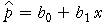
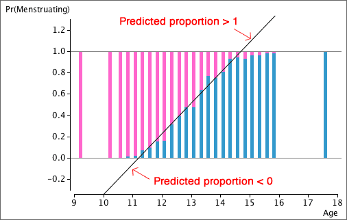
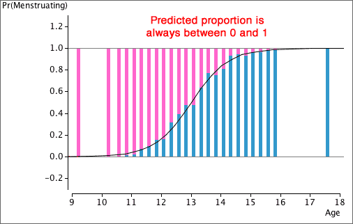

Linear model
It is tempting to try a linear model to explain how the proportion in one response category is affected by the explanatory variable,
predicted proportion, 
Unfortunately this may result in predicted proportions greater than 1 or less than 0.

Nonlinear models
We should use a model that gives values between 0 and 1 for all possible values of X. This means that the equation must be nonlinear in X.
